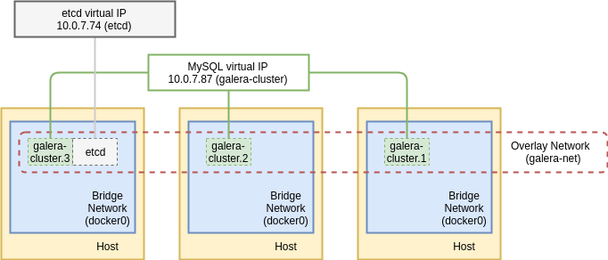

Doc Objective
- Performance stress test comparison between MariaDB and MySQL
- Dockerized
- Build Galera image from scratch
- Create MySQL Galera cluster by Percona
Reference Documents
Tune your Galera nodes > https://severalnines.com/blog/9-tips-going-production-galera-cluster-mysql
1.0 Performance test in single node of MySQL and MariaDB
Version
| db | version |
|---|---|
| mariadb | 10.3.6 |
| mysql | 5.7.22 |
Launch Containers
docker run --name mariadb-solo \
-e MYSQL_ROOT_PASSWORD=mysecret \
-v /pool/data/maria/conf.d:/etc/mysql/conf.d \
-v /pool/data/maria/var_lib:/var/lib/mysql \
-d mariadb:10.3.6
docker run --name mysql-solo \
-e MYSQL_ROOT_PASSWORD=mysecret \
-v /pool/data/mysql/conf.d:/etc/mysql/conf.d \
-v /pool/data/mysql/var_lib:/var/lib/mysql \
-d mysql:5.7.22
/etc/mysql/conf.d/mysql-server.cnf
[server]
bind-address=0.0.0.0
binlog_format=row
default_storage_engine=InnoDB
innodb_autoinc_lock_mode=2
innodb_locks_unsafe_for_binlog=1
query_cache_size=1048576
#query_cache_type=0
innodb_flush_log_at_trx_commit=2
sync_binlog=0
Create Database and Import Data
docker exec -it mysql-solo /bin/bash -c "mysql -uroot -pmysecret patroller < /var/lib/mysql/data-dump.sql"
Note:
patrolleris the database name for example.
Test Result
- MySQL
mysql> select DEVICE_NO from t_idcard_record_copy1;
2754855 rows in set (0.92 sec)
mysql> select DEVICE_NO from t_idcard_record_copy1 where CREATETIME BETWEEN '2018-05-13 19:31:50' and '2018-05-13 19:33:01';
12711 rows in set (0.15 sec)
- MariaDB
mysql> select DEVICE_NO from t_idcard_record_copy1;
2754855 rows in set (3.340 sec)
mysql> select DEVICE_NO from t_idcard_record_copy1 where CREATETIME BETWEEN '2018-05-13 19:31:50' and '2018-05-13 19:33:01';
12711 rows in set (2.286 sec)
2.0 Build Galera Image
Reference Documents
http://galeracluster.com/2015/05/getting-started-galera-with-docker-part-1/ http://galeracluster.com/documentation-webpages/docker.html https://www.digitalocean.com/community/tutorials/how-to-configure-a-galera-cluster-with-mysql-5-6-on-ubuntu-16-04
- Dockerfile
# Galera Cluster Dockerfile
FROM ubuntu:14.04
MAINTAINER your name <j3ffyang@gmail.com>
ENV DEBIAN_FRONTEND noninteractive
RUN apt-get update
RUN apt-get install -y software-properties-common
RUN apt-key adv --keyserver keyserver.ubuntu.com --recv BC19DDBA
RUN add-apt-repository 'deb http://releases.galeracluster.com/galera-3/ubuntu trusty main'
RUN add-apt-repository 'deb http://releases.galeracluster.com/mysql-wsrep-5.6/ubuntu trusty main'
RUN apt-get update
RUN apt-get install -y galera-3 galera-arbitrator-3 mysql-wsrep-5.6 rsync
# COPY my.cnf /etc/mysql/my.cnf # we use our own
ENTRYPOINT ["mysqld"]
- Build image
docker build -f galera_dockerfile -t ubuntu:galera-node1 ./
- my.cnf
[server]
user=mysql
bind-address=0.0.0.0
binlog_format=row
default_storage_engine=InnoDB
innodb_autoinc_lock_mode=2
innodb_locks_unsafe_for_binlog=1
query_cache_size=0
query_cache_type=0
innodb_flush_log_at_trx_commit=2
sync_binlog=0
- Launch
docker run --name galera1 -e MYSQL_ROOT_PASSWORD=mysecret \
-e MYSQL_INITDB_SKIP_TZINFO=yes \
-v /data/galera/conf.d:/etc/mysql/conf.d \
-v /data/galera/var_lib:/var/lib/mysql \
-d ubuntu:galera-node1
3.0 MySQL Galera
Reference Documents
https://severalnines.com/blog/mysql-docker-introduction-docker-swarm-mode-and-multi-host-networking
Architecture

Steps
- Create a network
If you want your application specifically gets running within this private network, you need to create this network.
docker network create --driver=overlay galera-net
- Launch
etcd(ref > https://hub.docker.com/r/elcolio/etcd/)
curl -w "\n" 'https://discovery.etcd.io/new?size=1'
docker service create --name etcd \
--replicas 1 \
--network galera-net \
-p 2379:2379 \
-p 2380:2380 \
-p 4001:4001 \
-p 7001:7001 elcolio/etcd:latest -discovery=https://discovery.etcd.io/b3e9ea12745bb7e9bfc2797979f7b9c4
- Inspect
etcdnetwork
docker service inspect etcd -f "{{ .Endpoint.VirtualIPs }}"
[{pv0gr2386qxeu8rjwozknkhjw 10.255.0.152/16} {6xcxhy1szdqrxzkxcf63y8a1z 10.0.7.74/24}]
- Launch
docker service create --name galera-cluster \
--replicas 3 \
--network galera-net \
-p 13306:3306 \
-e MYSQL_ROOT_PASSWORD=mysecret \
-e DISCOVERY_SERVICE=10.0.7.74:2379 \
-e XTRABACKUP_PASSWORD=mysecret \
-e CLUSTER_NAME=galera-cluster perconalab/percona-xtradb-cluster:5.6
- Sample
/etc/my.cnf
ubuntu@host02:~$ docker exec -it galera-cluster.1.du7ziacs6f4sb4wh61gym5x8i /bin/bash -c "cat /etc/my.cnf"
[mysqld]
datadir=/var/lib/mysql
default_storage_engine=InnoDB
binlog_format=ROW
innodb_flush_log_at_trx_commit = 0
innodb_flush_method = O_DIRECT
innodb_file_per_table = 1
innodb_autoinc_lock_mode=2
bind_address = 0.0.0.0
skip-name-resolve
wsrep_slave_threads=2
wsrep_cluster_address=gcomm://
wsrep_provider=/usr/lib64/galera3/libgalera_smm.so
wsrep_sst_method=xtrabackup-v2
wsrep_sst_auth="root:"
- Inspect
docker service inspect galera-cluster -f "{{ .Endpoint.VirtualIPs }}"
[{pv0gr2386qxeu8rjwozknkhjw 10.255.0.159/16} {6xcxhy1szdqrxzkxcf63y8a1z 10.0.7.81/24}]
4.0 etcd
Reference Documents
https://coreos.com/etcd/docs/latest/v2/docker_guide.html https://hub.docker.com/r/severalnines/mariadb/ https://github.com/severalnines/galera-docker-mariadb
On 1st container
docker run -d -v /usr/share/ca-certicates/:/etc/ssl/certs \
-p 4001:4001 -p 2380:2380 -p 2379:2379 \
--name etcd quay.io/coreos/etcd:v2.3.8 \
-name etcd0 \
-advertise-client-urls http://0.0.0.0:2379,http://0.0.0.0:4001 \
-listen-client-urls http://0.0.0.0:2379,http://0.0.0.0:4001 \
-initial-advertise-peer-urls http://10.0.1.6:2380 \
-listen-peer-urls http://0.0.0.0:2380 \
-initial-cluster-token etcd-cluster-1 -initial-cluster \
etcd0=http://10.0.1.6:2380,etcd1=http://10.0.1.2:2380,etcd2=http://10.0.1.10:2380 \
-initial-cluster-state new
On 2nd container
docker run -d -v /usr/share/ca-certicates/:/etc/ssl/certs \
-p 4001:4001 -p 2380:2380 -p 2379:2379 \
--name etcd quay.io/coreos/etcd:v2.3.8 \
-name etcd1 \
-advertise-client-urls http://0.0.0.0:2379,http://0.0.0.0:4001 \
-listen-client-urls http://0.0.0.0:2379,http://0.0.0.0:4001 \
-initial-advertise-peer-urls http://10.0.1.2:2380 \
-listen-peer-urls http://0.0.0.0:2380 \
-initial-cluster-token etcd-cluster-1 -initial-cluster \
etcd0=http://10.0.1.6:2380,etcd1=http://10.0.1.2:2380,etcd2=http://10.0.1.10:2380 \
-initial-cluster-state new
On 3rd container
docker run -d -v /usr/share/ca-certicates/:/etc/ssl/certs \
-p 4001:4001 -p 2380:2380 -p 2379:2379 \
--name etcd quay.io/coreos/etcd:v2.3.8 \
-name etcd2 \
-advertise-client-urls http://0.0.0.0:2379,http://0.0.0.0:4001 \
-listen-client-urls http://0.0.0.0:2379,http://0.0.0.0:4001 \
-initial-advertise-peer-urls http://10.0.1.10:2380 \
-listen-peer-urls http://0.0.0.0:2380 \
-initial-cluster-token etcd-cluster-1 \
-initial-cluster \
etcd0=http://10.0.1.6:2380,etcd1=http://10.0.1.2:2380,etcd2=http://10.0.1.10:2380 \
-initial-cluster-state new
Launch MySQL-Galera
docker service create --name mysql-galera \
--replicas 3 \
-p 13306:3306 \
-e MYSQL_ROOT_PASSWORD=mysecret \
-e DISCOVERY_SERVICE=0.0.0.0:2379 \
-e XTRABACKUP_PASSWORD=mysecret \
-e CLUSTER_NAME=mysql-galer \
--mount type=volume,src=mysql-galer,dst=/var/lib/mysql \
perconalab/percona-xtradb-cluster:5.6
Check wsrep
ubuntu@host04:~$ docker exec -it mysql-galera.2.ifvaai2goxcv6gbjstaap6mhm mysql -uroot -pmysecret -e "show status like 'wsrep_local_state_comment'"
Warning: Using a password on the command line interface can be insecure.
+---------------------------+--------+
| Variable_name | Value |
+---------------------------+--------+
| wsrep_local_state_comment | Synced |
+---------------------------+--------+
Check etcd health
ubuntu@host04:~$ etcdctl cluster-health
member 26b098302d00adb is healthy: got healthy result from http://0.0.0.0:2379
member 140fedbeeb74765d is healthy: got healthy result from http://0.0.0.0:2379
member 819153d262a7846c is healthy: got healthy result from http://0.0.0.0:2379
cluster is healthy
List etcd member
ubuntu@host04:~$ etcdctl -C http://10.0.1.6:2379,http://10.0.1.2:2379,http://10.0.1.10:2379 member list
26b098302d00adb: name=etcd0 peerURLs=http://10.0.1.6:2380 clientURLs=http://0.0.0.0:2379,http://0.0.0.0:4001
140fedbeeb74765d: name=etcd2 peerURLs=http://10.0.1.10:2380 clientURLs=http://0.0.0.0:2379,http://0.0.0.0:4001
819153d262a7846c: name=etcd1 peerURLs=http://10.0.1.2:2380 clientURLs=http://0.0.0.0:2379,http://0.0.0.0:4001